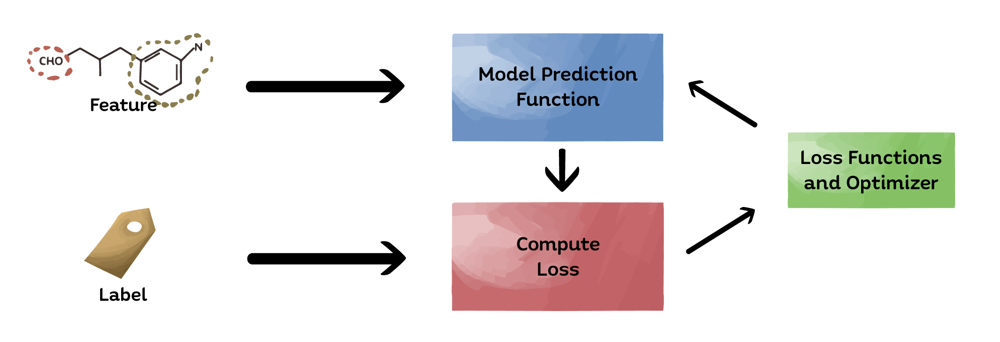
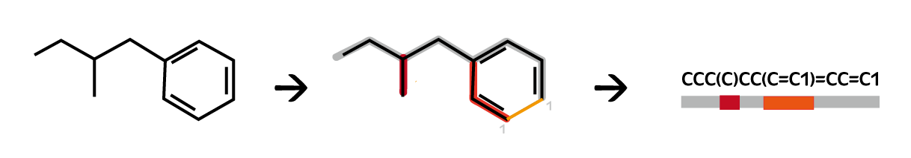
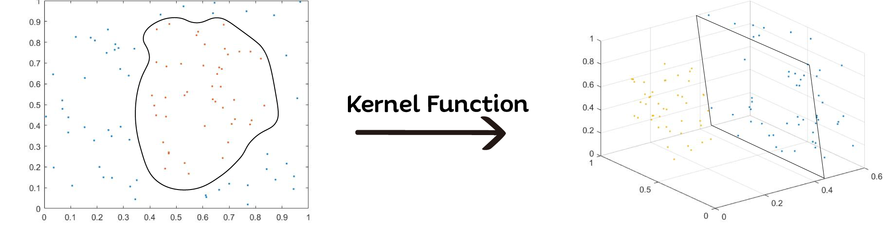
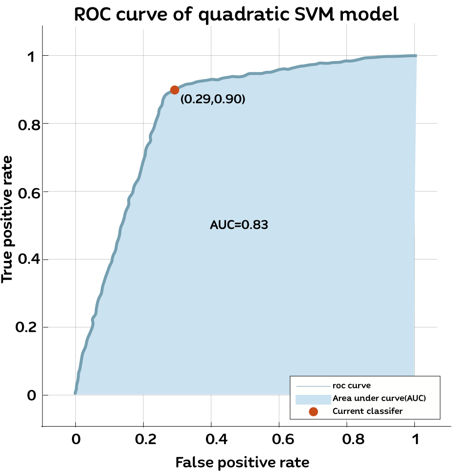
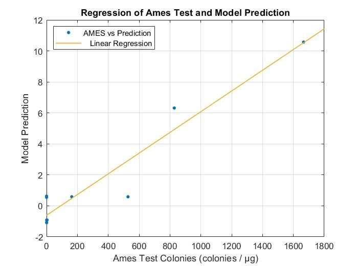

Mutagenicity Prediction
Introduction
In our integrated human practice, we have an interview with Professor Lan in NCTU. He told us that mutagenicity is highly related to chemical substructure. We are inspired, so we come up with an idea: how about we use machine learning to predict the mutagenicity on the basis of chemical substructures? Before training our model, it’s important to preprocess the training data. After dealing with the input data, we do the feature extraction of substructures with mutagen potential. We use support vector machine (SVM) and its scoring function to quantify the mutagenicity. For our validation part, we compare the mutagenicity which calculated by our artificial intelligence and the number of bacterial colonies from Ames test to prove the score is reliable.
Introduction to machine learning
With the popularity of artificial intelligence, more and more experts in different field start to use it as researching tool. Machine learning is a branch of artificial intelligence, concisely, it processes input data to generate useful predictions. Unlike normal programming methods, machine learning use “statistics” instead of “logics” to solve problems. This contributes to machine learning can solve complicated tasks with easier programming.
Basic Concept of Machine Learning
In general, training a machine learning model can be represented by the following flow chart:
Figure 1: Flow chart of machine learning
In supervised machine learning progress, training data can be divided into features and label. For features, the model will compute the input vector and make predictions to compare with the label. Initially, the loss will be large, so we have loss function and optimizer to adjust the parameters in the model to make the prediction be more accurate. Once the training data is sufficient and the training progress achieve certain iteration, the loss score will converge to a stable value, which means the training is over.
Database Preprocessing
Figure 2: Database preprocessing
1. Database source
For trustworthy machine learning, sufficient data is crucial. We use QSAR toolbox which is an open software that offers transparent chemical hazard assessment. We collect the chemical structure in the data form of SMILES as training data and the result of Ames test as target data for machine learning.
Table 1: Database Source
2. SMILES
Simplified Molecular Input Line Entry System (SMILES) is kind of chemical notation which is commonly used in molecular database. The feature is that SMILES can easily use 1-dimensional syntax to represent a 3-dimensional chemical structure. In other words, once we have the SMILES of the chemical, we can get the chemical structure in 1-dimensional syntax.
Figure 3: SMILES notation transition
3. Feature extraction
In our human practice, we have an interview about machine learning with the doctoral student in computer science laboratory. He suggests that we can’t just put the SMILES as input data directly. Instead, we have to extract the features. We find a paper which suggests that 67 kinds of substructures with mutagen potential. Because one kind of chemical structure can be written in multiple ways in SMILES so we can’t just catch the substring in SMILES. We use RDKit in python API which is an open-source library commonly used in the field of cheminformatics to catch the substructures. After catching the substructures, we can take it as input features for machine learning.
4. Labeling
The result of Ames test is “Positive” or “Negative”. However, it’s hard for machine to understand what is “Positive” or “Negative”, so we label “Positive” and “Negative” with “1” and “0.”
Support Vector Machine
SVM model is built for quantifying the mutagenicity of chemical compounds. To do so, we use machine learning algorithm which called support vector machine (SVM). SVM is mainly featured for data classification in pattern recognition. Simply speaking, this kind of method simulates a plane equation to sperate the data into two classes. Because of the plane might classify a multi-dimensional data in machine learning, we name it “hyperplane”. To divide a 3-D space, we need to use a 2-D plane, so we can deduce that in N-dimensional space, we need a (N-1)-D hyperplane to spilt. There are some data points which will determine the optimal hyperplane, and those critical point called “support vector.”
SVM Scoring Function
$$f(x) = \sum_{i=1}^{m}\alpha _{i}y^{(i)}K(x^{(i)},x)+b $$
Table 2: The parameters of SVM scoring function
SVM scoring function can compute a score to a new input. If the output score in this function is positive then the input is belonged to the class y = 1; if is negative then the input is belonged to the class y = -1. It seems that, in the table we will find out a training data corresponding to a parameter α which is too complicated to calculate whole score function. In fact, only the support vector will have value of α to decide the hyperplane, others will be zero.
Table 3: The instances of SVM score
Kernel Function
The kernel function in this score system is to apply on each data point to map the original non-linear classification results into higher-dimensional space in which they become separable. It also transfers high-dimensional space into a matrix to simplify calculation and reduce time in machine learning.
The following figure shows the input and the output data point of kernel function in different dimension.
Figure 4: The examples of input and output of kernel function
Results
We train our model with many kinds of algorithms, such as decision tree, KNN, ANN and so on, and finally we found that quadratic SVM has the highest accuracy.
$$Accuracy = \frac{TP+TF}{TP+TN+FP+FN} = 0.834 $$
TP:True positive
TN:True negative
FP:False Positive
FN:False negative
Validation:k-folds cross validation (k = 5)
Training data:7231 mutagens and 13769 non-mutagens
Confusion Matrix
Figure 5: The confusion matrix of predicted class and true class
ROC Curve
A receiver operating characteristic (ROC) curve is one of the most important evaluation metrics for checking performance of classifiers. It compares two operating characteristics, true positive rate (TPR) and false positive rate (FPR), to diagnosis the ability of model also known as relative operating characteristic curve.
Figure 6: The ROC curve analysis of Support vector machine (SVM)
The area under the curve (AUC) of ROC is the standard to judge model’s ability. The score will between 0 and 1, and the higher the score, the higher the accuracy. If AUC > 0.5, it means that the model has predictive value.
Statistical Histogram
We are not satisfied with the result of 83.4% accuracy, so we ask expert who has abundant experience in Ames test and pharmacology. He told us that the reason why our model has such false negative rate. That’s result in Ames test has high false positive rate so that the false negative rate will increase when we use it as statistical data.
In order to check if the problem caused by statistical data, we use ISSTOX database (not in our training data) and we collect the more reliable data, which shows the same result from more than one experiment.
As we can see below, the false negative rate (FNR) lower than before. Thus, we can prove that our model is trustworthy.

Figure 7: Statistical data of SVM score
Comparison of Ames Test Colonies and SVM scores
The result of Ames test can be referred to be the comparison of mutagenicity. In order to prove that our artificial intelligence is trustworthy, we plot the linear regression of the result of Ames test and our model prediction.
Figure 8: Regression of Ames test and model prediction
Table 4: Parameters of Regression
Demonstration
We design an UI for the public and you. Click the website below to experience our artificial intelligence!
Label: The thing we are predicting. In our model, the label is “mutagen” or “non-
mutagen.”
Features: Features in machine learning are input variables. In our model, the features
are the substructures.
Loss: Loss is the mean square error of label and model prediction.
Model: The thing we are predicting. In our model, the label is “mutagen” or “non-
mutagen.”